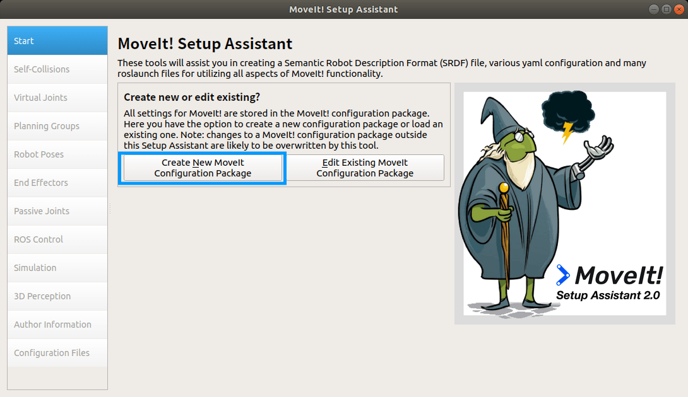
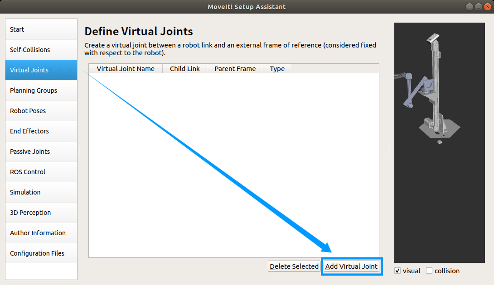
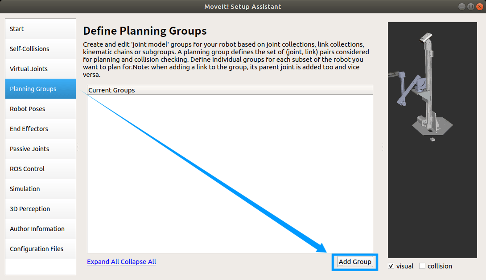
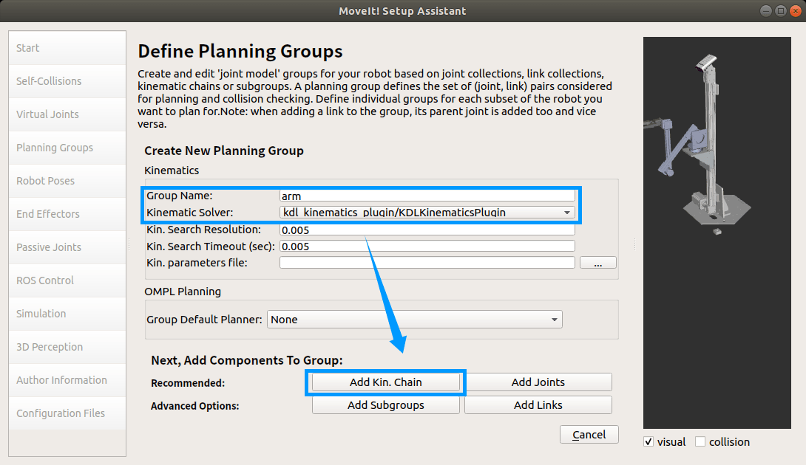
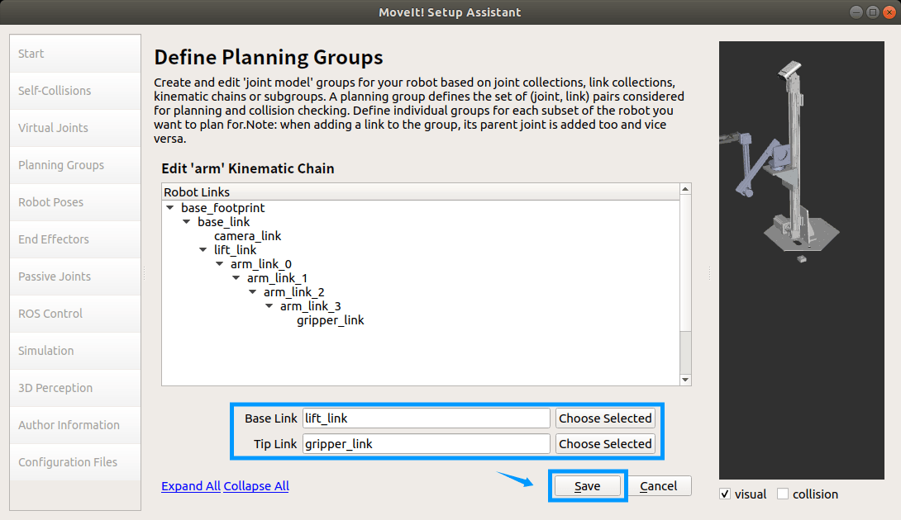
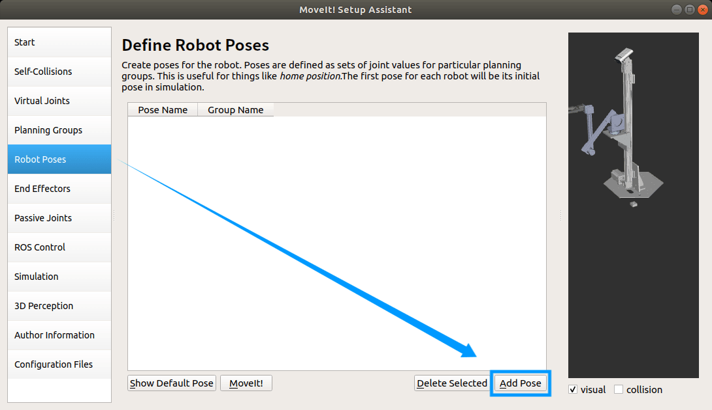
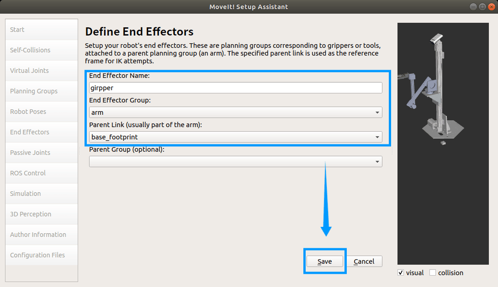
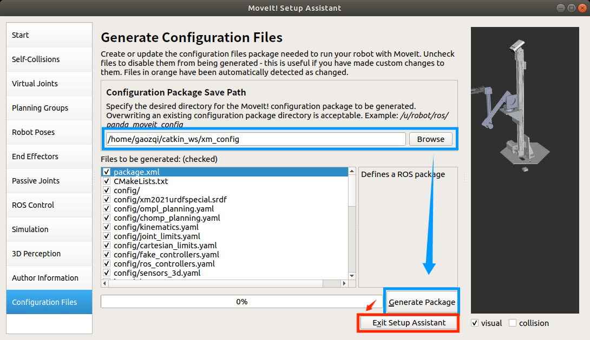

URDF 配置过程
准备 MoveIt! 环境
略
创建工作区
通过下面指令创建 ROS 工作区
将 URDF 解压后放置在 src 中，编译工作空间
source 工作区
启动 MoveIt!
打开终端，启动 moveit_setup_assistant 功能包，如果报错可新建终端启动 roscore 节点

配置 URDF
打开 URDF 文件
点击创建新的配置，选择 URDF 后缀文件，通常在 ./[name]/urdf/[name].urdf .

选择完成后，点击加载。

设置/虚拟关节
选择 Virtual Joints，点击 Add Virtual Joints 添加虚拟关节（非必要）。

添加规划组
选择 Planning Groups，点击 Add Group，添加机械臂规划组。

输入规划组名称，选择解算器后点击 Add Kin. Chain.

从上方关节中选择机械臂的 Top_Link 和 Base_Link，确定后保存退出。

设置机器人姿态
选择 Roboto Poses，点击 Add Pose 添加机器人姿态

输入姿态名称，选择规划组，拖动右侧滑杆是机器人到达指定姿态后保存。

设置末端效应器
选择 End Effectors，点击 Add End Effector 添加末端效应器。

输入名称，选择对应参数后保存。

设置作者信息并保存
点击 Author Information ，输入作者名称和邮箱。

设置 URDF 配置保存路径，点击 Generate Package，等待配置文件生成，完成后点击 Exit Setup Assistant 退出。

常见问题
工作区常见问题
-
catkin_make报错。返回到工作区根目录再次尝试。
-
编译工作区时报错，显示非法名称。
联系机械重新生成 URDF 文件，修改文件名称。
命名要求：
- 不能包含
. - 名字不宜过长
- 不能包含
-
MoveIt! 打开 URDF 时，终端报错。
关闭所有终端，重新
source工作区后，再次尝试。
MoveIt! 常见问题
-
关节列表为空。
联系机械重新生成 URDF 文件。
-
设置姿态时没有右侧拉杆。
关闭 GUI 界面，重新打开，先进行自碰撞矩阵生成，然后在进行设置。
-
设置姿态时右侧拉杆无法移动。
联系机械重新生成 URDF 文件，修改关节软限位。
参考文章：为什么 ROS Moveit setup 中 Define Robot Pose 栏目下滑条无法拖动？ - 知乎